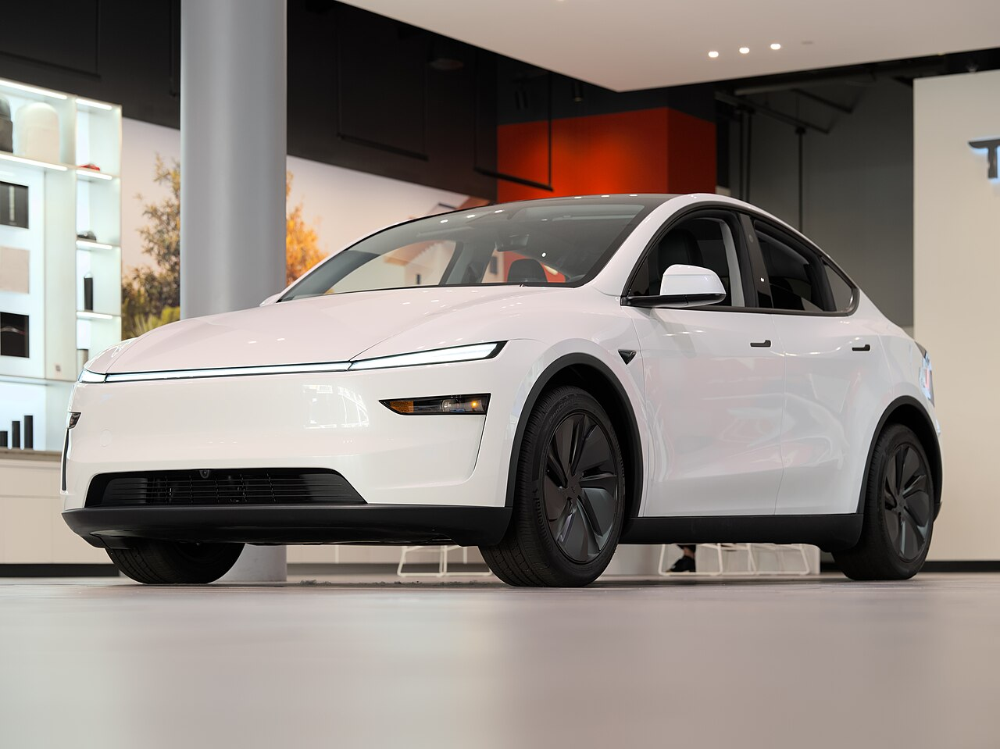

Tesla's revenue fell in 2025 as car sales dropped and energy storage grew


Tesla's revenue fell 2.9% to $94.8 billion in 2025, its first decline in the eight years covered here. Its operating margin dropped to 4.6% from 7.2%, and net income fell 46.5% to $3.8 billion. Free cash flow rose 73.7% to $6.2 billion, because capital spending fell while cash from operations held steady.
Car sales fell while energy storage and services grew
Revenue slipped from a peak of $97.7 billion in 2024, after growth of 0.9% that year and 18.8% in 2023. Inside the total, the businesses moved in different directions. Tesla's 10-K says automotive sales revenue fell $6.66 billion, or 9%, because of a drop of approximately 8% in cash deliveries and a lower average selling price per unit, which it ties to sales mix and higher customer incentives such as financing options. Revenue from selling regulatory credits to other automakers fell $770 million, or 28%. The company says that US government and regulatory actions, including a 2025 tax and spending law, restricted some of the credit programs tied to its products.
Services and other revenue, which includes used vehicles, maintenance, paid Supercharging and insurance, rose $2.00 billion, or 19%. Energy generation and storage revenue rose $2.69 billion, or 27%, mainly on more Megapack and Powerwall deployments, partly offset by a lower average selling price for Megapack. For vehicles, the 10-K says Tesla produced approximately 1.66 million and delivered approximately 1.64 million in 2025.
Margins narrowed as research spending rose
Gross profit slipped from $17.45 billion to $17.1 billion, while gross margin was almost unchanged at 18.0%, against 17.9%. That total hides two moves. Tesla reports that the gross margin of its total automotive business decreased from 18.4% to 17.8%, primarily because of the fall in regulatory credits revenue. The gross margin of its energy generation and storage business increased from 26.2% to 29.8%.
Below gross profit, research and development spending rose 41.2% to $6.4 billion, or 6.8% of revenue against 4.6% a year earlier. The 10-K says the increase was primarily due to higher costs related to AI and other programs, and to an increase in stock-based compensation of $500 million. Operating income fell 38.5% to $4.4 billion. Operating margin has now fallen three years in a row, from 16.8% in 2022 to 9.2% and 7.2% before reaching 4.6%, its lowest since 2019.
Net income fell by almost half
Net income was $3.8 billion, down from $7.1 billion, and diluted earnings per share fell 47.1% to $1.08. Income before tax fell 41.3%, and net income fell further because the effective tax rate rose to 27.0% from 20.4%. Tesla attributes the higher rate to changes in the mix of where it earned its profits and to the effects of the 2025 US tax law.
Other items outside operations also moved against the company. The 10-K says other (expense) income, net, changed unfavorably by $1.11 billion, primarily because of mark-to-market on its bitcoin holdings and exchange-rate movements on intercompany balances.
Cash flow improved as capital spending fell, with more spending planned
Cash from operations was $14.7 billion, 1.2% lower than in 2024. Additions to property and equipment fell 24.8% to $8.5 billion, which took 57.8% of operating cash flow, against 76.0% in 2024. Free cash flow therefore rose to $6.2 billion, 6.6% of revenue, from 3.7% in 2024.
Cash grew and debt stayed low
Cash and short-term investments rose 20.5% to $44.1 billion. Total debt was $6.6 billion and finance lease liabilities were $223 million, so cash exceeded both together by $37.3 billion. Property and equipment, net of depreciation, rose 13.4% to $40.6 billion, and shareholders' equity was $82.1 billion.
Tesla paid no dividends and bought back no shares in any of the eight years. Its diluted share count rose 0.9% to 3,528 million. Stock-based compensation was $2.8 billion, up 41.3% and equal to 3.0% of revenue, against 2.0% in 2024.
Eight years of figures
Total debt is the balance sheet's long-term debt plus its current debt line. Per-share figures and share counts are adjusted for Tesla's stock splits. Segment and delivery figures, and the company's reasons for changes, are quoted from the 10-K.
Sources: Form 10-K (SEC EDGAR) · Form 10-K filing index · EDGAR company facts for Tesla. More figures for Tesla are on its company page.